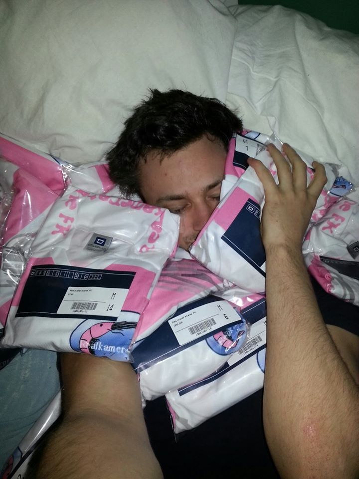

Rekas historie!
Realkameratene, bedre kjent som Reka, har helt siden klubbens spede begynnelse i 2006 dominert Trondheims studentfotball. Ikledd sine karakteristiske hvite og rosa drakter har klubben med fryktingytende fart og presisjon terrorisert studentligaen. Laget som bruker mesteparten av tiden til å pleie sine reke-relaterte tradisjoner og ordspill har gjennom årenes gang etablert seg som et uunnværlig innslag i Trondheims studentfotball.
Klubben har flere gode minner, og vi har valgt å vise noen på denne siden her. Nedenfor ser dere et bilde fra da vi fikk nye drakter.
